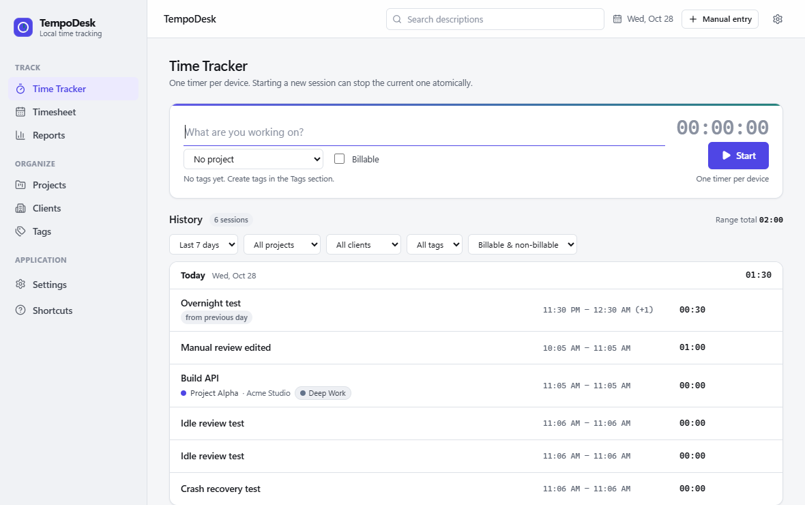
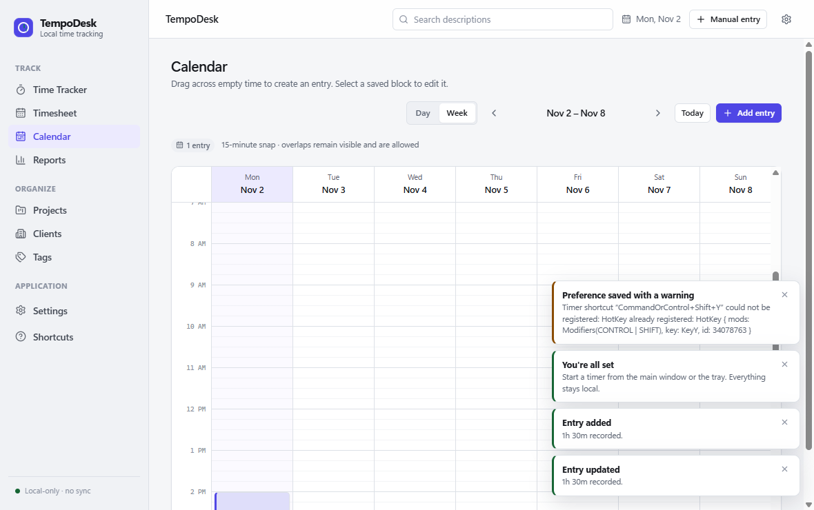

Accurate tracking
One timer. Zero ambiguity.
Start, stop, switch, and resume sessions with exact timestamps. Crash recovery, overnight work, and daylight-saving transitions are handled explicitly.
A focused desktop time tracker with visual calendars, projects, timesheets, and reports—without accounts, subscriptions, telemetry, or mandatory cloud storage.

Start quickly, fix mistakes safely, and understand where your week went. Every view reads from the same local entry ledger.
Start, stop, switch, and resume sessions with exact timestamps. Crash recovery, overnight work, and daylight-saving transitions are handled explicitly.
Switch between day and week views, drag to create entries, and edit blocks in place.
Filter by project, client, tag, or billable status and export matching RFC 4180 CSV.
Group sessions by project and task, inspect each cell, and edit the underlying entries.
Opt in to aggregate idle detection and explicitly keep, split, or end the session.
SQLite, versioned JSON backups, transactional restore, and CSV export. No service needs to stay online for TempoDesk to work.
Calendar blocks, timesheet cells, reports, and history always point back to saved sessions.

TempoDesk stores its source-of-truth database in your operating system's application data directory. Core tracking, reports, calendar, exports, and backups all work offline.
Read the data and privacy documentationFree, open source, and ready without creating an account.
Windows 11 x64 · per-user installer
Download NSIS installer Download MSI insteadmacOS 13+ · Intel x64 · unsigned
Download DMG CI-built; runtime verification is pending.Current builds are unsigned. Windows SmartScreen or macOS Gatekeeper may show a warning. Review the source and release notes before installing.
Release notesNo. Install it and start tracking. There is no sign-up or mandatory online service.
In a local SQLite database inside your operating system's application-data directory. You can also create portable JSON backups.
Core functionality does not. Optional AI summaries contact Gemini when you click Generate. Creating a live report link downloads a verified helper and connects through Cloudflare until you stop, quit, or the link expires.
Yes. Use Share in Reports or Timesheet, preview the filters and fields, and create a temporary read-only link. Keep your PC and TempoDesk online. Anyone with the link can view the selected report; replace or stop it whenever you need. Temporary sharing is a beta feature without an uptime guarantee.
Yes. Reports export filtered detailed entries as standards-compliant CSV, and the displayed totals use the same calculation.
Yes. The full application, tests, architecture notes, and release workflow are available on GitHub.